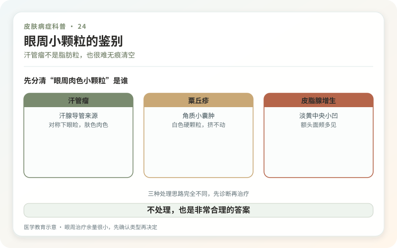
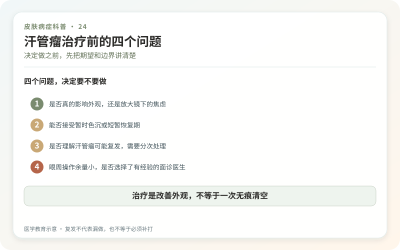

汗管瘤通常是1—3毫米的肤色、淡黄或淡褐色小丘疹，最常成群、对称出现在下眼睑和眼周，也可见于面颊、颈胸或其他部位。它来源于小汗腺导管，是良性皮肤附属器肿瘤。它不是油脂堵住的“脂肪粒”，也不能像粉刺一样挤出一颗完整内容物。
很多人在青春期后逐渐明显，女性更常就诊，部分有家族倾向。它通常不痛不痒，不传染，也不会因为护肤品太油就突然“排出来”。

眼周小颗粒，长得像的太多了
粟丘疹多是表浅、白色偏硬的角质小囊肿；皮脂腺增生常有黄色和中央小凹；扁平疣可能数量增加并有传染性；眼周脂溢性角化、皮赘和少见肿物也可相似。汗管瘤常较深、肤色、成群分布，但仅凭自拍仍可能误判。
皮肤科通常通过查体和皮肤镜判断，非典型、单个快速长大、破溃或持续出血时可能需要活检。眼睑周围首先要确认性质，再讨论美容处理。

为什么治疗很难做到“一次无痕”？
汗管瘤位于真皮，处理太浅可能残留，太深则增加凹疤和色素改变。医生可能使用电干燥、二氧化碳激光、点阵激光、射频、化学方法或小范围切除等，核心是在改善凸起与保护正常皮肤之间找平衡。
眼周皮肤薄，深肤色人群又更易出现炎症后色沉。一次清除所有小丘疹、能量过猛或恢复期抠痂，都可能留下比原病更显眼的白点、黑印或凹陷。即使处理得当，残留和复发也不罕见。
决定做之前，先问四个问题
诊断是否确定？目标是减少数量还是追求完全平整？能接受多久的红肿结痂？如果出现色沉或复发怎么办？大面积眼周治疗最好先做少量测试，等数月看稳定结果再扩大，而不是当天“全眼清空”。
任何靠针挤、粉刺针挑或美容院腐蚀药水的方法都不适合汗管瘤。自行操作不仅无法取出深部结构，还可能感染和留疤。靠所谓排油、排湿调理也不会让汗管导管肿瘤消失。
不处理也是非常合理的答案
汗管瘤多数只影响外观。它不会因为数量多就自动变成恶性，日常正常清洁、保湿和防晒即可。化妆可以遮盖色差，但要避免反复摩擦和撕拉眼周皮肤。
如果治疗，前后照片应在同样光线、同样妆容和恢复完全后比较。刚结痂脱落时的短暂平整不代表最终瘢痕状态。
汗管瘤治疗不是把“坏东西挤出来”，而是在良性皮损和操作损伤之间做选择。知道不完美的边界，反而更容易得到满意结果。
先确认是汗管瘤，不是“眼周脂肪粒”
汗管瘤常为肤色或淡黄色小丘疹，双侧眼周分布，但粟丘疹、皮脂腺增生、扁平疣等也可能相似。放大镜下看起来像，并不能代替皮肤科判断。数量突然增多、单个快速长大、出血结痂或颜色明显改变时，应重新面诊。美容机构用一个统称打包“点掉”，会把诊断和治疗风险都变得含糊。
眼周治疗的难点是“余量很小”
电灼、激光或其他破坏性治疗都可能改善外观，但病灶多而密，处理太浅可能残留，太深则增加凹陷、色沉、色减和瘢痕风险。眼睑皮肤薄，靠近眼球还必须落实眼部防护。先做少量测试、等待完整恢复，再决定密度和范围，通常比一次追求“全清”更稳妥。术后肿胀和结痂需要预留真实恢复时间。
复发不代表医生漏做，也不等于必须补打
可见病灶被处理后，其他微小病灶仍可能逐渐显现，部分位置也可能残留。治疗前要约定评估时间、可接受的改善程度和停止条件。若化妆后已经不明显，继续追求零颗粒可能让正常皮肤承担更多伤害。术后温和清洁、按医嘱护理和严格防晒，不抠痂；持续疼痛、渗液、视物异常或明显瘢痕趋势应及时复诊。
决定不治疗，也是一种完成决策
可以先用正常社交距离而不是十倍镜观察：别人是否真的首先注意到它？若只有强侧光和放大自拍才明显，治疗收益可能小于恢复期风险。若确实影响化妆、职业表达或自我感受，再把目标限定为减少最突出的一部分。小病灶不自动等于小风险，尤其在眼周；做不做，应由本人需求和医学边界共同决定。
咨询时可以要求看同肤色、同部位、完整恢复后的病例，而不是只看术后即刻平整照。问清未处理病灶、复发和瘢痕各自怎么定义。愿意展示不完美结果、讲清停止条件的医生，通常比只承诺“一次净”更可信。